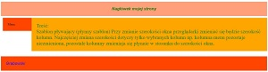
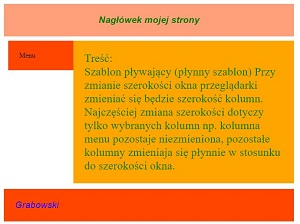

html
<!DOCTYPE html> <html> <head> <style type="text/css"> /* początek def CSS */ * { margin: 0px; padding: 0px;} /* zerowanie styli */ div {overflow: hidden; padding: 25px; } /* overflow: hidden --> ????????????????? */ /* padding: 25px; --> ??????????????????*/ #ramka { /* definicja elementu ID o nazwie ramka*/ margin-right: auto; /* auto -->??????? */ margin-left: auto; min-width: 400px; /* minimalna szer strony-->?? */ max_width: 900px; /* maksymalna szer strony-->?? */ } #naglowek { background-color:#FFA07A; /* kolor tła w HEX na #FCF; */ font-size:16pt; /* wielkość czcionki na 16 na jaka tu jest jednostka-wpisz */ color:green; /* ????????????? */ font-family: Arial; /* ????????????? */ font-style: italic; /* ????????????? */ text-align: center; /* ????????????? */ font-weight:bold; /* ????????????? */ } #stopka { background-color: #FF4500; font-size:16pt; color:blue; font-family: Arial; font-style: italic; clear:both; /* clear-przyleganie elementów, both-?????????????? */ } .kolumny {/*definicja elementu ???? (jest kropka i co to znaczy)*/ margin-top: 10px; /* ????????????? */ margin-rigth: 2%; /* ????????????? */ margin-bottom: 2%; /* ????????????? */ margin-left: 10px; /* ????????????? */ } #kol1 { float: left; /* ?????????????? */ width:100px; background-color: #FF4500; } #kol2 { background-color: #FFA500; font-size:0.7cm; color:green; } /* ?????????????? <--*</style> </head> <body> <div id="ramka"> <div id="naglowek">Nagłówek mojej strony </div> <div class="kolumny" id="kol1"><p>Menu</p> </div> <div class="kolumny" id="kol2"><p>Treść:</p> Szablon pływający (płynny szablon) Przy zmianie szerokości okna przeglądarki zmieniać się będzie szerokość kolumn. Najczęściej zmiana szerokości dotyczy tylko wybranych kolumn np. kolumna menu pozostaje niezmieniona, pozostałe kolumny zmieniaja się płynnie w stosunku do szerokości okna.<br>   </div> <div id="stopka">Grabowski</div> </div> </body> </html> <!--Mikołaj Grabowski 1P-->